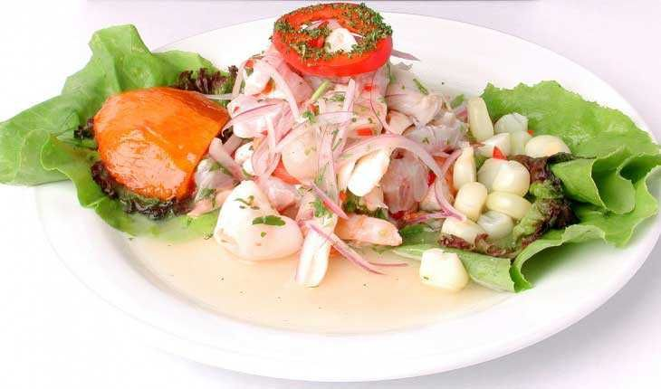

Ingredientes
- 1kg de pescado blanco fresco y de lomo ancho
- 6 limones
- 2 cebollas moradas cortadas en juliana fina
- 2 cucharadas de cilantro fresco picado finamente
- 1 cucharada tipo postre de rocoto o ají amarillo picados finamente (sin pepitas)
- Sal y pimienta al gusto
Preparación
Para preparar un auténtico ceviche peruano, corta 500 gramos de pescado blanco fresco (como lenguado o corvina) en cubos medianos, colócalos en un tazón frío, añade sal al gusto, una pizca de sazonador (opcional) y ají limo picado finamente, mezclando suavemente para que el pescado absorba la sal; luego, vierte inmediatamente el jugo de unos 8 a 10 limones criollos recién exprimidos a mano sin presionar demasiado para evitar el amargor, remueve durante un minuto para que la carne se tome ese tono blanco característico y agrega inmediatamente cebolla morada cortada en pluma fina junto con un toque de cilantro fresco picado. Sirve de inmediato para disfrutar de la frescura del pescado y acompaña el plato con rodajas de camote (batata) sancochado, choclo desgranado y un poco de cancha serrana tostada.
Volver a las recetas